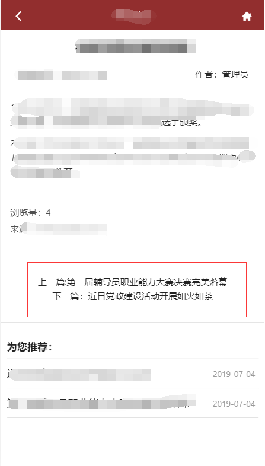
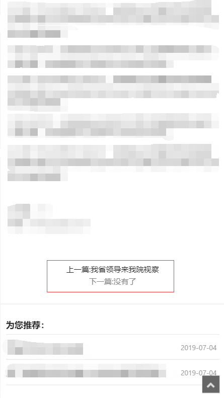
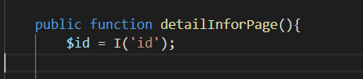
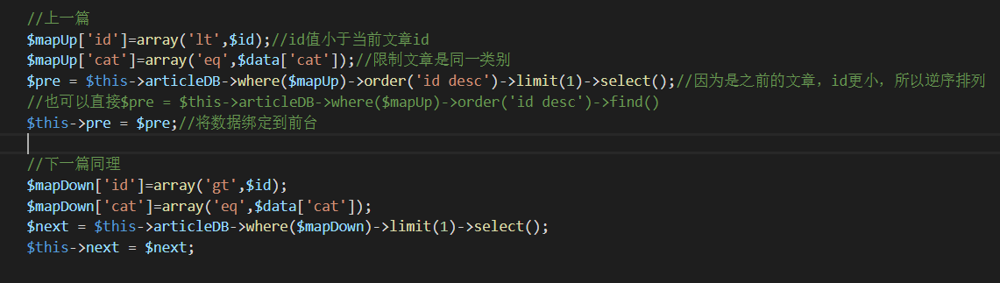
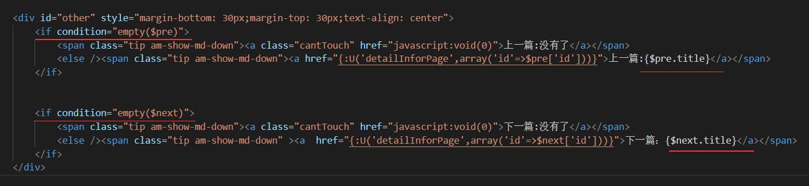

前段时间在公司中接触到了用thinkPHP搭建的项目，其中涉及到了文章详情页上一篇下一篇翻页的功能实现效果。
因为刚接触这套框架和PHP，所以整理一下实现该功能的经验方法。
如果有不到位的地方，欢迎指正！先看效果图：


其中涉及到了第一篇之前没有文章和最后一篇没有文章的问题。
<---------------------------------------------------------------------------------->
一.首先在Controller中获取从列表页传来的文章ID

二.设置查询到上下篇的条件，通过定义关联数组传入到where查询语句中去

三.在view层绑定数据，通过if else语句判断Controller传来的$pre,$next数组是否为空，如果为空则显示上下篇无文章

这里用的是empty（）方法判断Array是否为空，也有其他方法。
四.给上下篇无文章的情况设置灰色无法点击的样式。
刚接触PHP不久，如果说的不对的地方，欢迎交流指正！